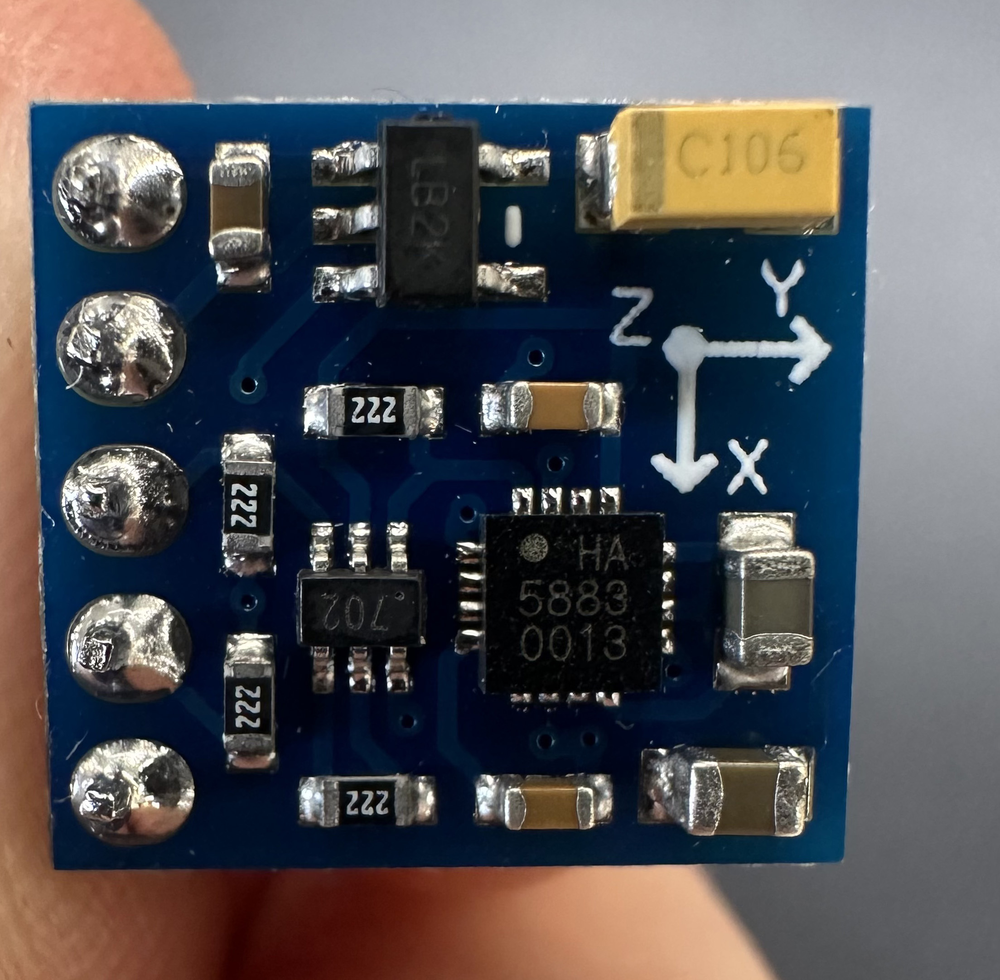
My family always gives me crap (read: love) for my obsession with making baking scales out of found objects. I didn't realize it was such a thing until many of them called me out about it. I've made baking scales out of coat hangers and floss, floorboards and mugs of water, and literally none of them are sensitive enough to accurately measure flour, but that never stops me from trying.
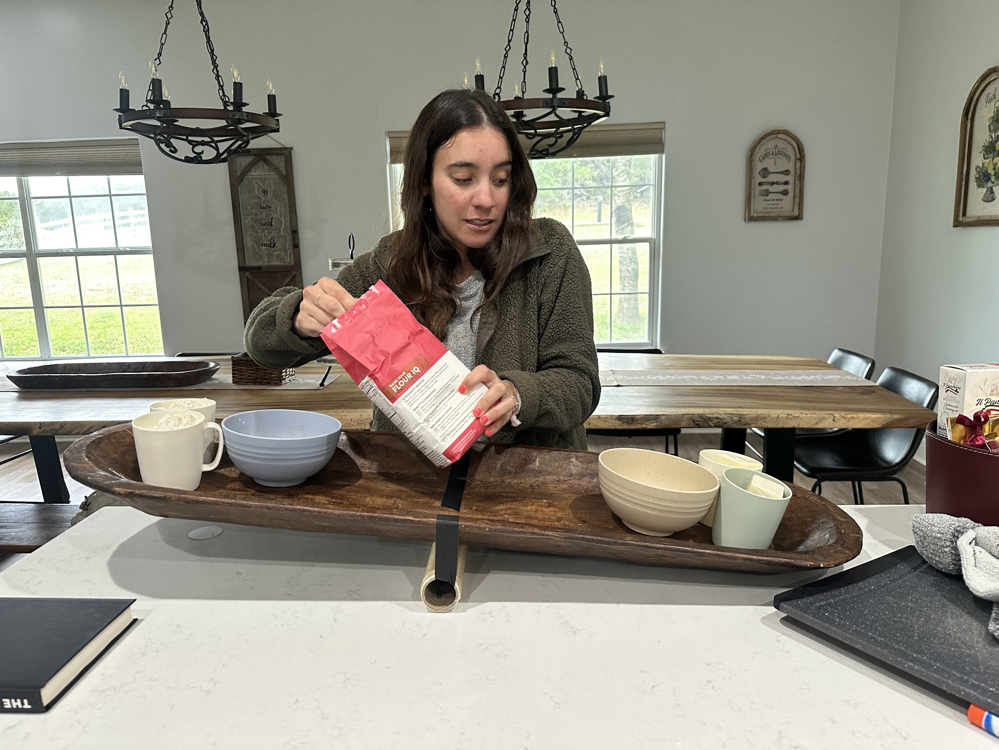
My extremely kind sister giving my pivot-slab scale a go. Spoiler: the donut dough that this scale measured out was VERY dry. But yummy!
This week I wanted to make an ELECTRONIC scale by using two sheets of copper as a capacitive sensor. Maybe I could make one sensitive enough to make bread!?!?! Turns out, if you wire two sheets of copper to a microcontroller, you can measure the capacitance between them. If you lie the contraption flat on a surface, then the capacitance changes when you put something on top of it, and you can use that to measure weight.
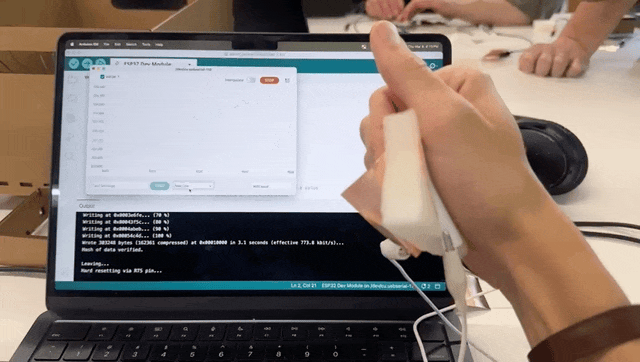
Squeeze - squeeze - squeesqueesqueeze.
The first challenge was stabilizing the scale. I intended to use water to dynamically control weight, but the container would tip over if it were balanced directly on top.
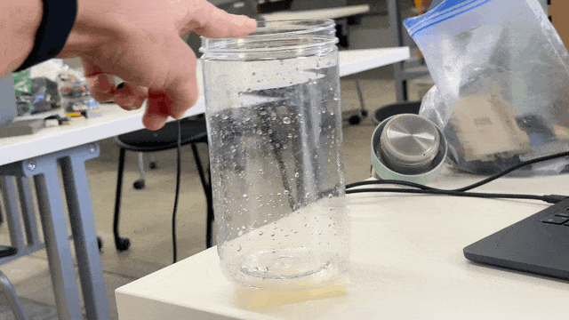
Wobble wobble.
I decided to use lego to make the scale's base because it's such a fast prototyping tool. There are a ton of little design features hiding in these colored blocks -- pieces that stabilize and center the container, a platform that offsets the sponge width so the container can be bigger than the platform without running into the stabilizing walls, and a jig to keep the copper sheets in place and prevent their misalignment from artificially changing the capacitance readings.
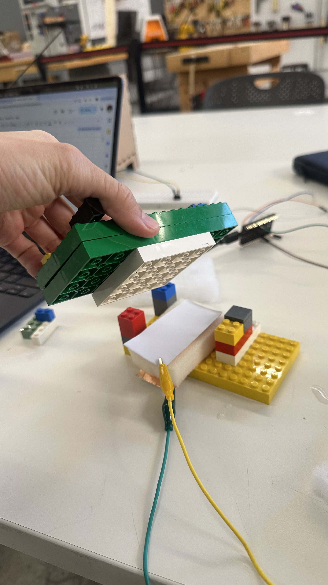
After a bunch of experimentation, it was stable.
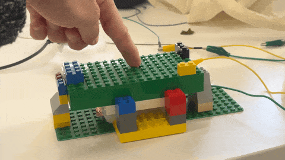
Rock solid!
I used a *boring* scale to accurately measure the water (1ml = 1g), then put the water in my awesome scale to measure the capacitance output.
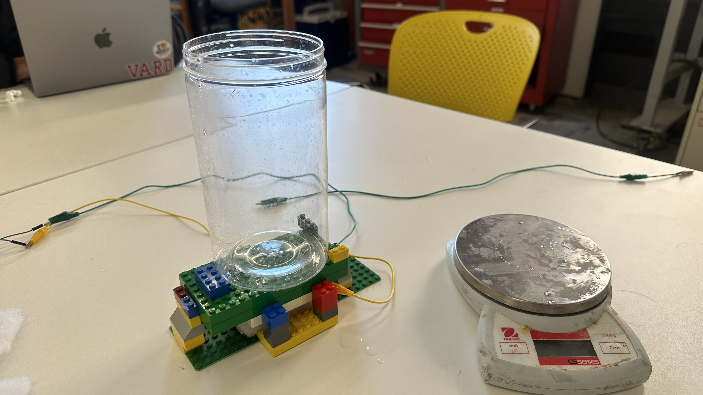
If you can find it on Amazong, it's boring
I quickly realized that the sponge material was too firm for the capacitance readings to be useful. When I would add 100g of water, the scale would only change its outputs 0.5% -- which was a great first-principles way of understanding sensistivity, but not a great way to measure flour. I ended up using a piece of fluffy coat liner instead, which was much more compressable under the weight range that we wanted our scale to handle.
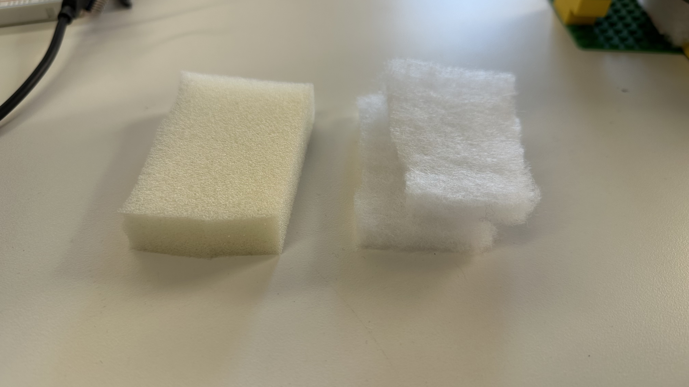
Stiff sponge vs Fluffy coat liner
I found and modified code that would measure the capacitance N times per second and print those values to Arduino IDE's serial monitor.
long result; //variable for the result of the tx_rx measurement.
int analog_pin = 32;
int tx_pin = 4;
int N_samples = 100; // Number of samples to take. Larger number slows it down, but reduces scatter.
int readDelay = 1000;
int startTime;
void setup() {
pinMode(tx_pin, OUTPUT); //Pin 4 provides the voltage step
Serial.begin(9600);
startTime = millis();
}
void loop() {
if (startTime + readDelay == millis()){
result = tx_rx() / N_samples;
Serial.println(result);
startTime = millis();
}
}
long tx_rx(){
int read_high;
int read_low;
int diff;
long int sum;
sum = 0;
for (int i = 0; i < N_samples; i++){
digitalWrite(tx_pin,HIGH); // Step the voltage high on conductor 1.
read_high = analogRead(analog_pin); // Measure response of conductor 2.
delayMicroseconds(100); // Delay to reach steady state.
digitalWrite(tx_pin,LOW); // Step the voltage to zero on conductor 1.
read_low = analogRead(analog_pin); // Measure response of conductor 2.
diff = read_high - read_low; // desired answer is the difference between high and low.
sum += diff; // Sums up N_samples of these measurements.
}
return sum;
} // End of tx_rx function.
Then I averaged those readings even further to account for my own movement. It turned out that the scale was affected much more by my own body position with regards to the scale, than the weight on top of it. I'm curious how *boring* scales get around this issue -- maybe by insulating the sensor from the environment.
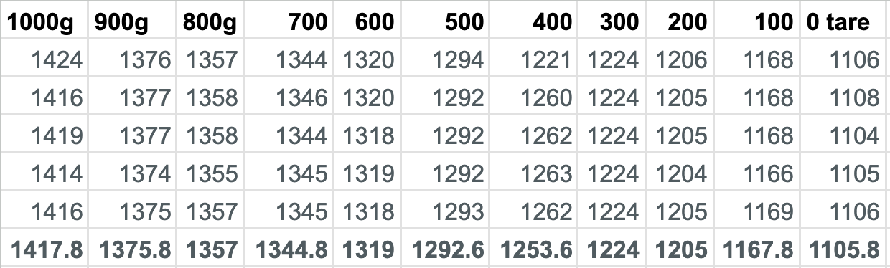
Weight data
My container could only hold a maximum of 1kg of water, but this didn't max out the scale -- even with the fluffy coat liner. So when plotting all my points to a graph to see the sensitivity curve, I simply pushed with my hand to see what the maximum reading would be (and I guestimated this as 3kg of force). As we can see, the curve isn't actually linear when the weight increases above a certain point, because as the sponge compresses it becomes more difficult to compress it further, making the capacitance change less and less.
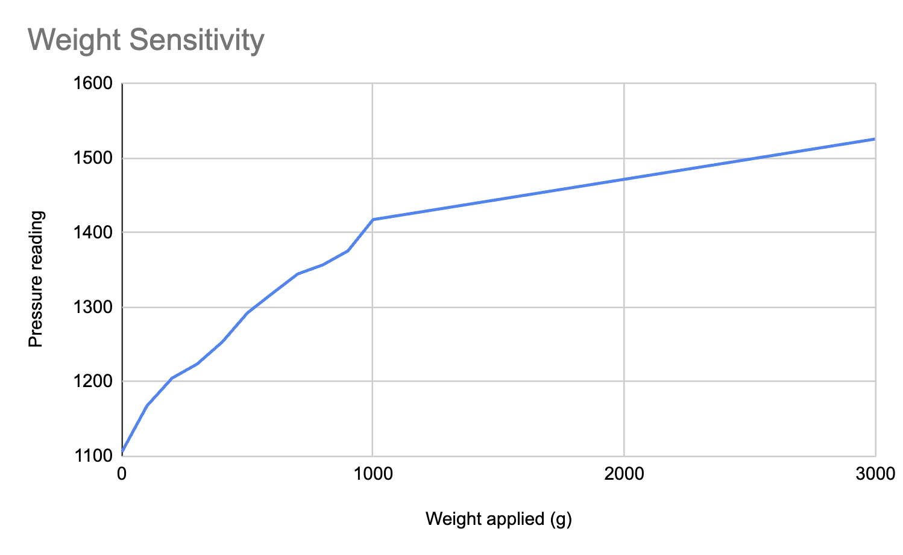
Capacitance vs Weight
To take this further, I'd need to remap my raw capacitange values to actual weights. And try the scale in different environments with other electronics and magnetic fields around. Ultimately, this scale proved approximately as useful as my past scales -- cool in theory, but primarily useful for showing just how cool a *boring* scale is :)
This one was a doozy. I did not achieve what I had set out to do: make the MVP of my Pigeon Belt by using an eccentric motor as my output device, and using the compass chip as my input device. Instead, I spent most of a whole day battling with buggy readings from two different compass chips. Such is life! Huge shoutout to Bobby for somehow debugging my six+ hours of work in 10 minutes. Learning is HARD! But knowledge is power?!
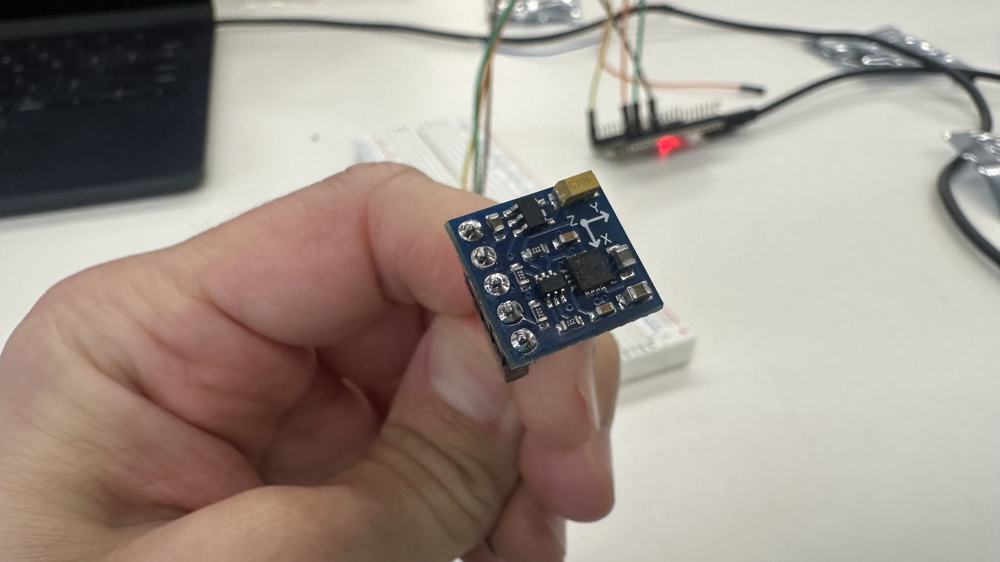
I should've known it wouldn't be easy when the chip itself required soldering before being usable.
I plugged the chip into my esp32 and went on a loooooong date with gpt to discuss the ten thousand things that weren't working. I won't go into it here because building is all about bugs and debugging, but eventually I got the chip to be readable. It was theoretically a huge win.
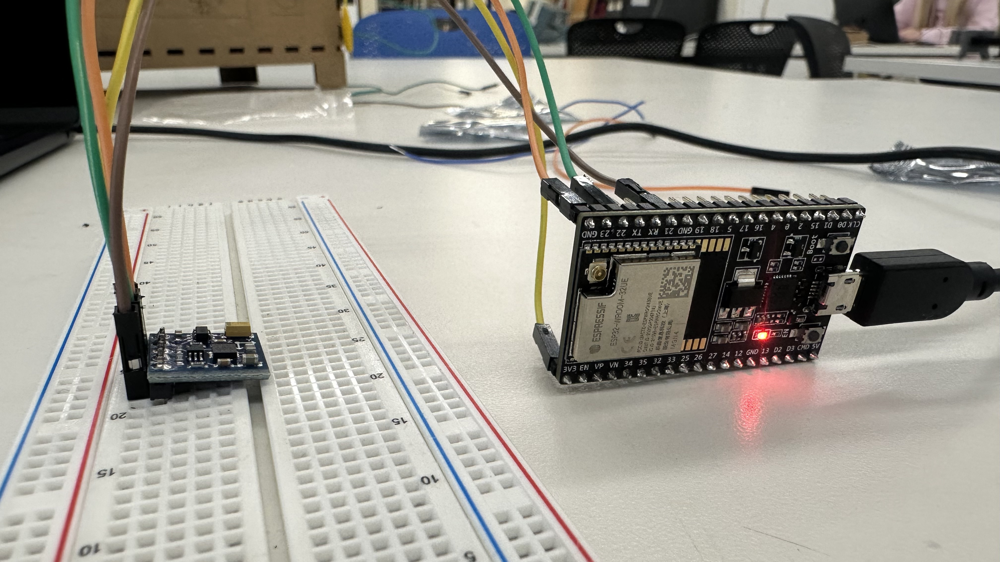
It works! (sort of)
But the data I was reading off of it was garbage. When I moved the sensor in a full 360 sphere, aiming all direcitons, its readouts were within a very narrow band of values. I wrote code to calibrate it by storing the max and min values, and spent two hours trying to figure out how to save the Arduino serial console text to a file (fail) because there was too much information there to copy paste. But ultimately I found myself in a fruitless loop.
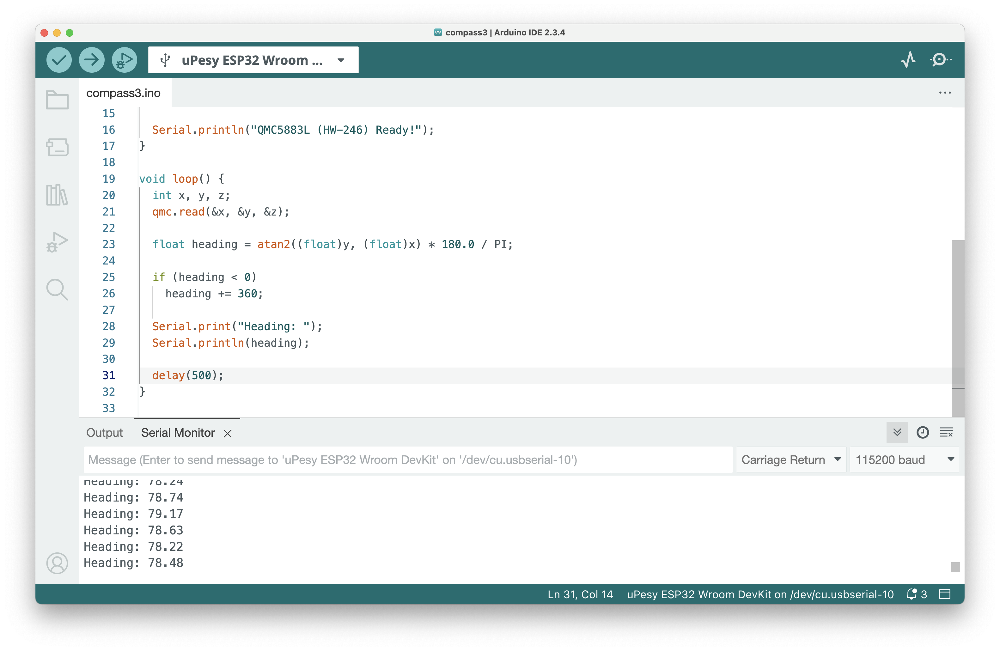
Notice how we're always aiming 78ish degrees north?
I soldered a different compass chip together and got the same results. I bailed from GPT and tried to follow actual tutorials. I even went back to the amazon page that the chip was from to read the reviews and see if there were clues. Turns out that this chip is a QMC5883L, which is a buggier and less reliable version of Honeywell's HMC5883L, which is different enough that none of the tutorials I was following worked.
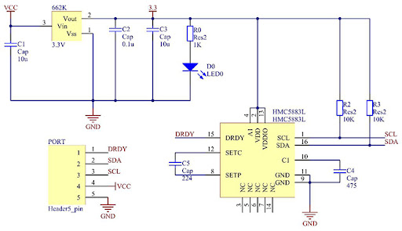
An extremely helpful schematic of the QMC5883L
Eventually Bobby came over to me, grabbed one of my compasses, found a data sheet, and identified one variable that the chip outputs that I hadn't known about -- azimuth. This ended up being the key to getting the compass to work.
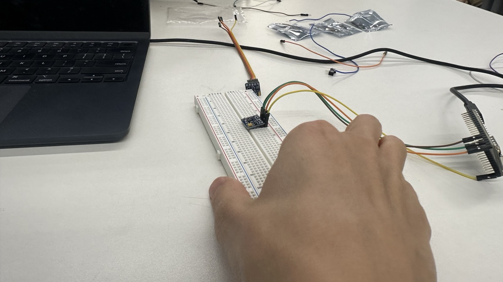
when lying flat, the chip doesn't seem to measure a full 360 degrees.
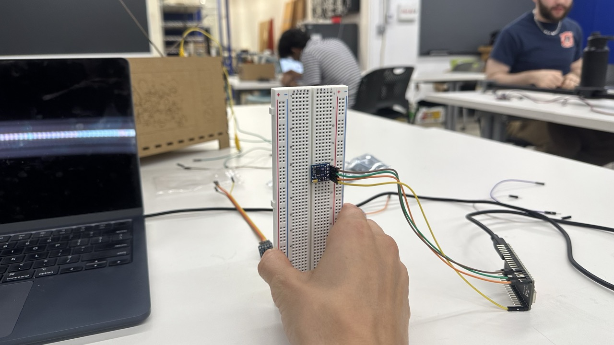
But bizarrely, when you rotate the chip around its Z-axis, WHILE VERTICAL, it reads a full 360 degrees of compass points.
This was a tough week. I wanted to use an actual output device that was cooler than my serial console within Arduino, but I couldn't even get the compass to spit out "north" consistently.
Biggest success: during my debugging day, I didn't get stressed out for 3 whole hours. I just kept trying things. This is a massive improvement over the 3 minutes that it took me to panic at the beginning of the semester.
Biggest learning: I need to understand which resource (gpt/forums/datasheets) are going to be most helpful at which part of debugging.
Biggest opportunity: if i can reframe my goals dynamically, it will help me manage my own expectations better. If something isn't working, I can throw my previous goals out the window and replace them with much simpler ones like "make a list of all the potential problems that MIGHT be causing the issue." And that can be a win. What I tend to do instead is "trajectorize" my progress -- if something is working, my brain automatically assumes everything else will now work too. This is almost exactly the opposite of what really happens. If something is working, that means I learned how to do it, and am now back at square one, about to start a new part of the problem that I am clueless about. This is a much more accurate way to think about it.
If I can do any of that before the MVP is due, we'll call it a win.
For this CNC assignment I want to cut out a map of my home, Sydney. I used Touch Terrain, a wonderful web app, to make this STL.
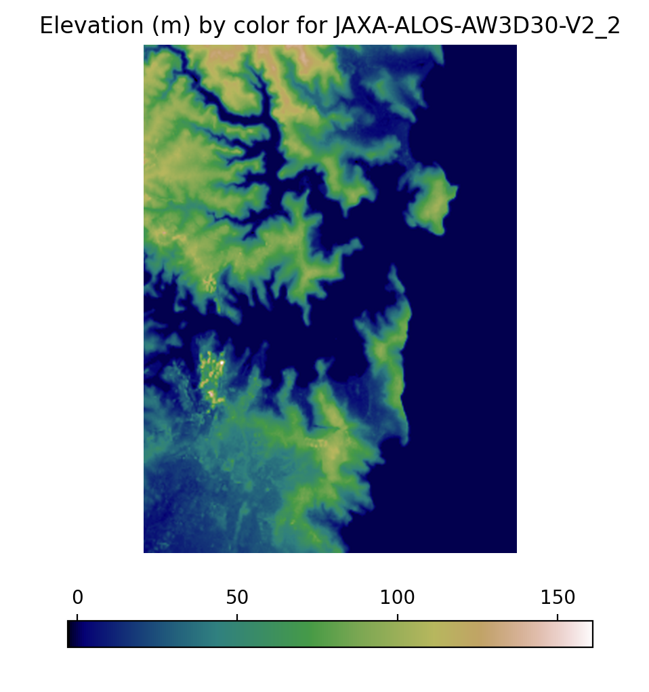